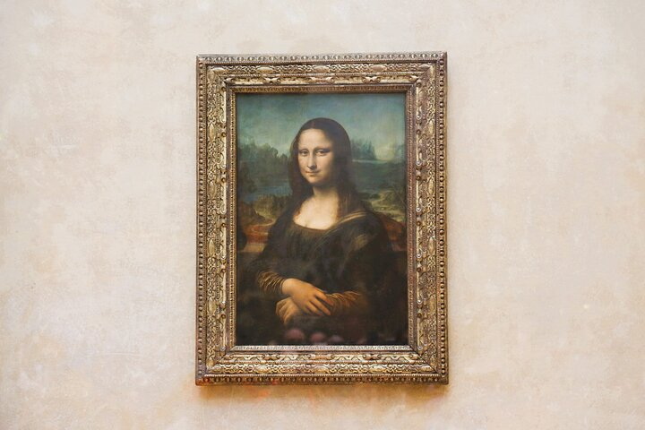
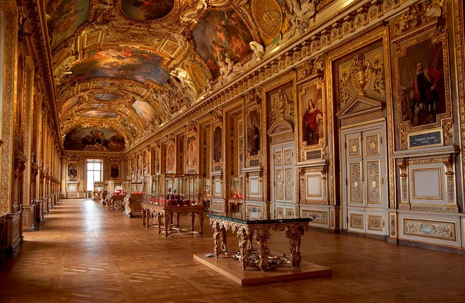

Lugares Turísticos na França
1. Torre Eiffel - Paris, França

A Torre Eiffel é um dos monumentos mais icônicos do mundo e um símbolo da França. Construída em 1889, ela oferece uma vista panorâmica incrível de Paris.
2. Mona Lisa - Paris, França
A Mona Lisa, também conhecida como La Gioconda, é uma pintura famosa de Leonardo da Vinci. Ela está exposta no Museu do Louvre e é uma das obras de arte mais conhecidas do mundo.
3. Museu do Louvre - Paris, França
O Museu do Louvre é o maior museu de arte do mundo e uma atração imperdível em Paris. Ele abriga uma vasta coleção de obras de arte, incluindo a Mona Lisa e a Vênus de Milo.